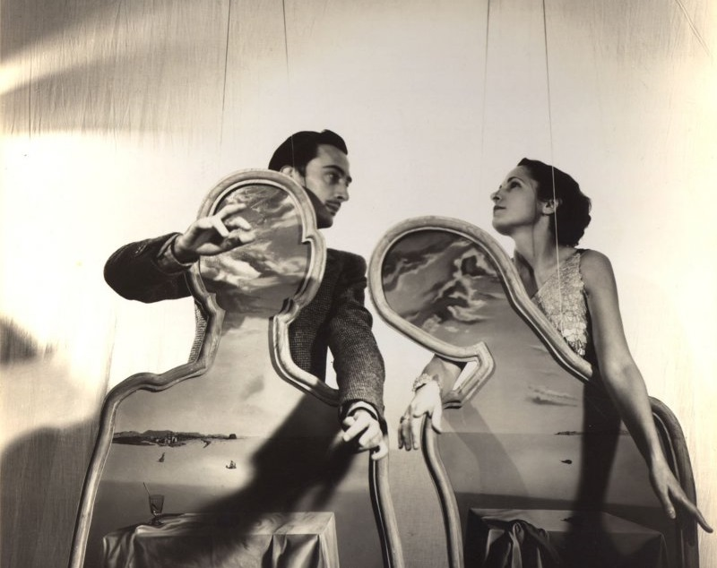

Rok 1929 byl pro Dalího důležitý z uměleckého i osobního hlediska. Byl v té době v zajetí obrazů surrealistických umělců jako byli Hans Arp, Max Ernst, Yves Tanguy a Joan Miró a sám ve stejném duchu maloval.
Do onoho roku spadá jeho druhý pařížský pobyt, spojený hlavně s natáčením Andaluského psa, na němž spolupracoval s Luisem Buñuelem. Film znamenal, že byl Dalí přijatý mezi pařížské surrealisty. Poznal tak André Bretona a Tristana Tzaru. V témže roce měl Dalí v Paříži první samostatnou výstavu, a to v Galerii Goemans.
V létě 1929 ho do Cadaqués přijeli navštívit Buñuel, René Magritte s manželkou a Paul Eluard se svou ženou Galou, původem Ruskou. Dalí a o deset let starší Gala († 1982) spolu navázali poměr; v jeho důsledku se Gala s Eluardem rozvedla a v říjnu 1934 si vzala Dalího.
Pro malíře to ovšem znamenalo rozchod s otcem, který jeho nemanželský poměr odmítl akceptovat. Gala se stala Dalího inspirací – často ji portrétoval – a především se starala o ekonomické záležitosti spojené s jeho tvorbou.
Hlavní stránka